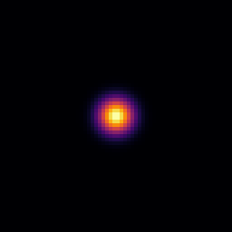
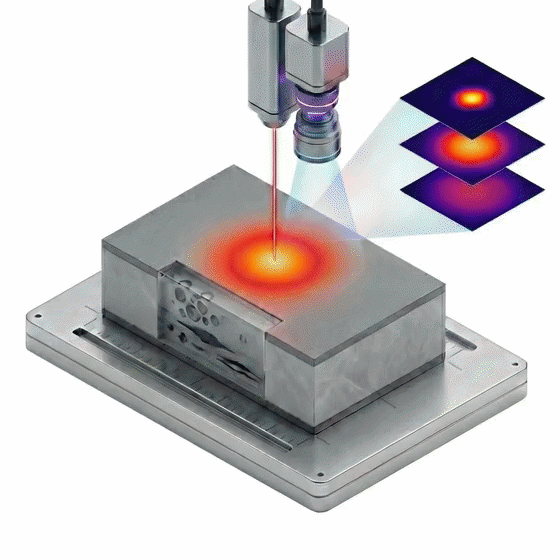
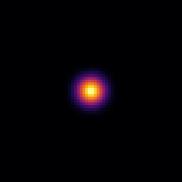
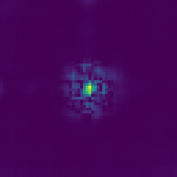
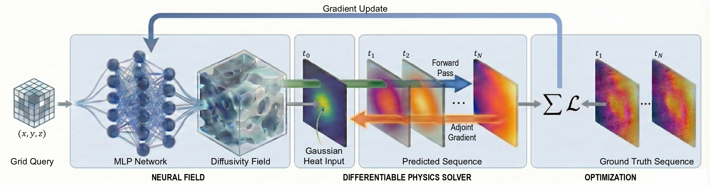

Overview

A high-speed camera records the transient surface temperature after a pulsed laser heats the specimen. NeFTY reconstructs the 3D subsurface diffusivity field from these measurements and reveals the hidden defects.
- Volumetric IoU 0.45 / 0.37
- On synthetic homogeneous and layered settings, while soft-constrained PINN variants and a voxel-grid baseline remain at or near zero.
- 0.431 IoU on real PVC data
- NeFTY is the best label-free method on every metric, with 0.597 Dice for 2D defect segmentation and 0.465 Abs Rel for 2.5D depth recovery.
- No volumetric labels
- Adjoint gradients run at solver-level memory cost, so each specimen is inverted at test time on a single GPU.
Abstract
Inverse problems for stiff parabolic partial differential equations (PDEs), such as the inverse heat conduction problem (IHCP), are severely ill-posed: the forward map rapidly damps high-frequency interior structure before it reaches the boundary. Soft-constrained physics-informed neural networks (PINNs), which embed the PDE as a residual penalty, decouple the diffusivity from the surface data in their standard two-network inverse formulation, and the evaluated variants fit boundary measurements while leaving the interior field essentially untouched. We propose Neural Field Thermal Tomography (NeFTY), a hard-constrained neural field framework for label-free three-dimensional inverse heat conduction. NeFTY represents the unknown diffusivity as a continuous coordinate-based neural network, and at every optimization step passes the candidate field through a differentiable implicit-Euler heat solver with harmonic-mean interface flux, so that the simulated temperature satisfies the discretized heat equation up to the solver tolerance. Adjoint gradients propagate the surface reconstruction error back to the network weights at solver-level memory cost, making test-time inversion tractable on a single GPU. Across synthetic 3D benchmarks, NeFTY outperforms soft-constrained PINN variants, a voxel-grid baseline, and classical L-BFGS voxel inversion through the same solver on label-free volumetric recovery, and it transfers to real thermography data, surpassing classical signal-processing baselines in both defect segmentation and depth estimation.
Interactive Reconstruction Results
Each column shows one method on the same specimen. The top row is the recovered 3D defect geometry, the middle row is the surface temperature sequence that each reconstruction predicts, and the bottom row is the L1 error of that sequence against the ground truth.
Setting
Ground Truth
NeFTY (Ours)
U-Net (Full)*
PINN
Grid Opt.
3D Diffusivity FieldDefects only
Predicted Surface Temp Evolution
N/A
Supervised method uses direct volumetric mapping

L1 Error Evolution
ReferenceGround-truth frame
N/ANo simulated sequence

* The U-Net (Full) baseline is trained on ground-truth diffusivity fields and does not simulate the forward thermal evolution.
Scroll sideways to see every method.
Methodology
NeFTY reconstructs the diffusivity field by analysis-by-synthesis: it proposes a field, simulates the surface temperature that field would produce, and corrects the field until the simulation matches the measurement.

-
Neural field
A coordinate-based MLP maps each grid query (x, y, z) to a diffusivity value, so the unknown 3D field is a continuous function of position.
-
Differentiable physics solver
At every optimization step, an implicit-Euler heat solver with harmonic-mean interface flux simulates the surface temperature sequence of the candidate field. The simulated temperature satisfies the discretized heat equation up to the solver tolerance.
-
Optimization
The loss compares the predicted and measured surface sequences. Adjoint gradients carry this error back to the network weights at solver-level memory cost, which keeps test-time inversion tractable on a single GPU.
Code
The implementation is available on GitHub. To get started:
$ git clone https://github.com/CAB-Lab-Princeton/NeFTY-code.git
$ cd NeFTY-code
$ pip install -r requirements.txt
# See the README for data generation, training, and evaluation.Citation
@inproceedings{zhong2026nefty,
title = {Neural Field Thermal Tomography: A Differentiable Physics Framework for Non-Destructive Evaluation},
author = {Zhong, Tao and Hu, Yixun and Zheng, Dongzhe and Sood, Aditya and Allen-Blanchette, Christine},
booktitle = {Advances in Neural Information Processing Systems (NeurIPS)},
year = {2026}
}Contact: Tao Zhong (tzhong@princeton.edu) | CAB Lab, Princeton University